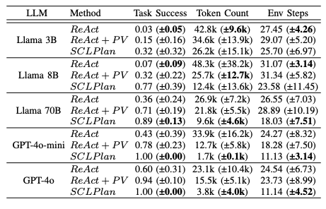

Abstract
Replicating human-level intelligence in embodied task execution remains challenging due to the unconstrained nature of real-world environments. Recent use of large language models (LLMs) for task planning seeks to address the previously intractable state/action space of complex planning tasks, but hallucinations limit their viability. Additionally, the prompt engineering required for adequate system performance lacks transparency and repeatability. In contrast, symbolic planning methods offer strong reliability and repeatability guarantees, but struggle to scale to the complexity of real-world tasks. We introduce a new planning method that augments LLM planners with symbolic planning oversight to improve reliability and repeatability, and provide a transparent approach to defining hard constraints with more clarity than traditional prompt engineering. We demonstrate our approach in simulated environments, outperforming current state-of-the-art methods. Deployment of our method to a real-world quadruped robot resulted in 75% task success compared to 50% and 14.3% for pure LLM and symbolic planners across several embodied tasks, many of which requiring complex reasoning and interaction with humans in realistic scenarios. Our approach presents an effective strategy to enhance the reliability, repeatability and transparency of LLM-based robot planners while retaining their key strengths: flexibility and generalizability to complex realworld environments.
Designing a Planner with SCLPlan
In the design phase, an engineer specifies planning constraints (i.e., the preconditions and effects of each action) through a PDDL environment domain. The engineer then creates an LLM planning prompt that provides natural language descriptions of the available actions. During execution, SCLPlan first uses an LLM to produce a PDDL goal state that is passed to a symbolic planner, then sequentially plans toward the goal while leveraging both symbolic and LLM planning components where appropriate. A visual description of the design approach can be seen in Figure 1 below.

Figure 1. SCLPlan Overview
Evaluation Environments
We evaluate SCLPlan on a variety of environments that differ in complexity. These environments range from simulation environments like ALFWorld and AI2Thor to multiple different real world environments and scenes. The simulation environments were chosen to provide strong, repeatable baselines and the real world environments were chosen to demonstrate true performance.

Figure 2. Visualization of evaluation environments.
Simulation Ablation Studies Demsonstrate Strong Performance of SCLPlan
Figure 3 provides ablation study results for three different approaches: 1. ReAct - a pure LLM approach, 2. ReAct + P V - a pure LLM whose next action predictions are first verified or corrected with our formal method Precondition Verification, and 3. SCLPlan - our full AI planner, which includes Precondition Verification as well as a Global Symbolic Planner (GSP) that constantly searches for a global solution to the planning task at each next action prediction. We evaluate each approach using Task Success percentage, total Token Count, and number of Environment Steps required to complete each task as our experimental metrics. Figure 3 clearly demonstrates the benefits of each formal method augmentation on the ALFWorld validation task set. Across every LLM, regardless of size and competency, the introduction of Precondition Verification and then Global Formal Planning significantly improved the overall Task Success rate of the pipeline. This pattern generally extends to both Token Count and Environment Steps, with a notable exception for the formulation of the planner using Llama 70B as its language backbone, which experienced a slight degradation of performance on the Token Count and Environment Steps metrics when using ReAct + PV alone.

Figure 3. SCLPlan significantly improves planning performance across several LLMs of various sizes.
SCLPlan Improves Planning Consistency
A key drawback of LLM-based planning approaches is a lack of consistency in their performance across the same task when performed mutliple times. Table 1 provides ablation study results in our simulated environments that show that SCLPlan greatly improves the consistency of planning across multiple different metrics.

Table 1. Ablation study using repeatability metrics. The values presented represent the mean and standard deviation of each metric across 10 runs of the same task, averaged across 10 different tasks. The lowest standard deviation for each model is bolded.
Robustness and Recovery
Symbolic planning methods are unable to implement intelligent recovery mechanisms on the fly. The LLM components of SCLPlan allow the planner to reason through failures, plan recovery maneuvers, and reach out to human experts for help, if needed.

Figure 5. SCLPlan leverages its LLM components for intuitive and intelligent failure recovery, including asking a human expert for assistance.
Full Planner Architecture
Figure 6 depicts a complete architectural diagram of SCLPlan, showing the 4 key phases of the framework. Phase 1: The LLM component is provided a task description and a description of available PDDL predicates for the system and produces a PDDL goal state. The perception pipeline creates a 3D scene graph which is combined with the PDDL goal state to generate a PDDL problem file. Phase 2: The formal planning component takes the PDDL problem file as input and attempts to generate a valid plan. If the plan executes successfully, the task is complete and the planner predicts task success. If failure occurs during planning or execution, SCLPlan moves to the next phase. Phase 3: The LLM planner takes over. Given the prior history, 3D scene graph, and action information the LLM predicts the next action and moves to the next phase. Phase 4: The symbolic planning component is used to determine if all preconditions are satisfied for the LLM component’s prediction. If preconditions are not satisfied, the symbolic planner will attempt to generate and execute a plan to satisfy the preconditions. This is effectively a recursive call to Phase 2 of the system. Finally, the system loops back to Phase 1.

Figure 6. SCLPlan design architecture.
Video Presentation
Another Carousel
BibTeX
@article{SCLPlan2026,
title={Constrained natural language action planning for resilient embodied systems},
author={Grayson Byrd and Corban Rivera and Bethany Kemp and Meghan Booker and Aurora Schmidt and Celso de Melo and Lalithkumar Seenivasan and Mathias Unberath},
journal={npj Artificial Intelligence},
year={2026},
url={https://gbyrd-research.github.io/Constrained-Natural-Language-Action-Planning-for-Resilient-Embodied-Systems/}
}